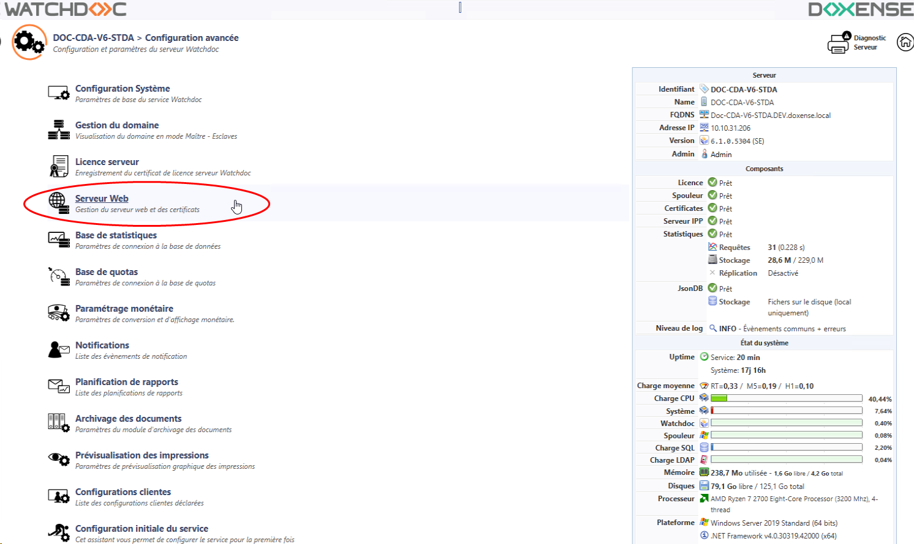
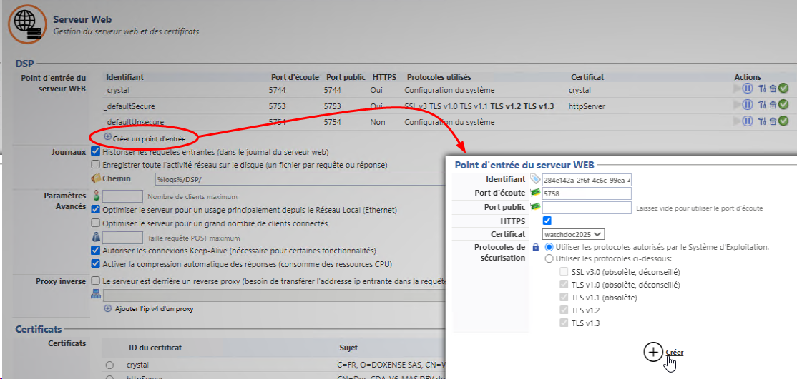

Principe
Apparue dans la version 6.1.0.5262, cette interface de configuration rassemble les paramètres relatifs au serveur Web (DSP) de Watchdoc et aux certificats qui en sécurisent l'accès.
Dans les versions précédentes, la section DSP se situe dans l'interface Configuration Système (Menu principal > section Configuration, Configuration avancée > Configuration Système > section DSP).
Cette section comporte les paramètres qui s'appliquent au serveur web de Watchdoc qui gère notamment l'interface d'administration, la page "Mon compte" et les Wes.
Lors de l'installation de Watchdoc, les 3 points d'entrée suivants sont créés par défaut :
-
_crystal (port 5744 HTTPS avec le certificat crystal) : il s'agit du point d'entrée par défaut permettant de sécuriser le serveur web à l'aide d'un certificat auto-signé fourni par Doxense. Ce point d'entrée peut être sécurisé par un autre certificat signé par une autorité de certification mais ne doit en aucun cas être désactivé, sous peine de rendre Watchdoc inopérant ;
-
_default Secure (port 5753, HTTPS, avec le certificat httpServer) : ce point d'entrée assure l'accès de WSC, de WES sécurisés, de la Print API et Skyprint ainsi que d'autres API provenant d'acteurs tiers tels que certains lecteurs de badges, par exemple ;
-
_defaultIUnsecure (port 5754, non-sécurisé par un certificat) : permet l'accès de certains WES non-sécurisés.
Ces points d'entrée suffisent au fonctionnement standard de Watchdoc, mais vous pouvez ajouter d'autres points d'entrée, notamment pour tenir compte de périphériques d'impression qui auraient des configurations spécifiques avec différentes versions de TLS, par exemple.
Vous pouvez aussi appliquer d'autres certificats (signés par une autorité de certification) aux points d'entrée existants ou nouvellement créés (cf. Gérer les certificats dans Watchdoc).
Accéder à l'interface de configuration
-
Depuis le Menu principal de l'interface d'administration, section Configuration, cliquez sur Configuration avancée ;
-
dans l'interface [Nom_du_serveur] > Configuration avancée, cliquez sur Serveur Web :

{kind=link}
è vous accédez à l'interface de gestion du Serveur Web de Watchdoc.
Configurer la section DSP
-
Pour modifier un point d'entrée existant, cliquez sur le bouton Editer du point d'entrée ;
-
pour ajouter un point d'entrée, cliquez sur Créer un nouveau point d'entrée. Cela peut notamment être nécessaire pour assigner à un WES un port SSL différent du port par défaut et l'associer à un certificat spécifique.
-
complétez les champs de l'interface Point d'entrée du serveur web :
-
Identifiant : l'identifiant est généré par défaut. Renommez-le si nécessaire.
-
Port d'écoute : indiquez le numéro du port chargé d'établir la communication entre le serveur web et une API tierce.
-
Port public : indiquez le numéro du port public s'il est différent du port d'écoute. Ce paramètre est nécessaire si un proxy sécurise l'accès au serveur Watchdoc. Attention, cette information est uniquement déclarative : si le port public est différent du port d'écoute, la correspondance est configurée dans le proxy.
-
HTTPS : cochez la case si le point d'entrée est sécurisé à l'aide de ce protocole (depuis la v. 6.1.1.5360, le point d'entrée _crystal 5744 est en HTTPS et ne doit pas être décoché dans une configuration par défaut).
-
Certificat : sélectionnez dans la liste le certificat associé au point d'entrée.
Si vous souhaitez appliquer un certificat spécifique sur l'un des points d'entrée, vous pouvez avoir à le générer et à le faire signer ou à l'importer (cf. Générer les certificats). -
Protocoles de sécurisation : dans la liste, sélectionnez le protocole de sécurisation associé au point d'entrée :
-
Utiliser les protocoles autorisés par le Système d'administration : choisissez cette option pour permettre au système d'exploitation d'utiliser ses propres paramètres.
-
Utiliser les paramètres suivants : choisissez cette option pour utiliser les paramètres coché en-dessous (SSL ou TLS v. 1.0, v1.1, v1.2) :
-
-
-
Cliquez sur le bouton Valider / Créer pour valider la modification ou créer le nouveau point d'entrée :

-
Précisez en ensuite les paramètres suivants :
-
Journaux.
-
Historiser les requêtes entrantes (dans le journal du serveur web) : cochez la case si vous souhaitez enregistrer l'activité réseau ( chaque packet request et response) sur le serveur DSP. Par défaut, chaque requête web traitée par le serveur (syntaxe compatible W3C Log) est enregistrée dans un fichier log sur le disque.
-
Enregistrer toute l'activité réseau sur le disque (un fichier par requête ou réponse) :
-
Chemin : précisez dans ce champ le chemin d'accès au dossier dans lequel doivent être enregistrés les fichiers de logs.
N.B. : les fichiers trace nécessitant de l'espace sur le serveur, nous vous recommandons d'activer l'historisation temporairement, afin d'établir un diagnostic relatif à l'activité réseau sur le serveur DSP puis de désactiver cette fonction une fois les traces collectées.
-
-
Paramètres avancés
-
Nombre de clients maximum : indiquez dans ce champ le nombre maximum de clients autorisés à se connecter au serveur.
-
Optimiser le serveur pour un usage principalement depuis le Réseau Local (Ethernet) : cochez la case pour activer l'optimisation lorsque le site web est sollicité en LAN
-
Optimiser le serveur pour un grand nombre de clients connectés : cochez la case pour optimiser le serveur en cas de forte affluence.
-
Taille requête POST maximum : indiquez, en Gb la taille des requêtes POST acceptées par le serveur
-
Autoriser les connexions Keep-Alive (nécessaire pour certaines fonctionnalités) : cochez cette case pour autoriser les connexions persistantes entre les navigateurs et le serveur Web ( keep-alive).
-
Activer la compression automatique des réponses (consomme des ressources CPU) : cochez cette case pour compresser les réponses fournies par le serveur aux requêtes qui lui sont envoyées par les applications tierces.
-
- Proxy inverse : cochez cette case si le réseau est doté d'un reverse proxy et indiquez l'IP de ce proxy.
-
-
Cliquez sur Valider pour enregistrer les paramètres de la section DSP.

{kind=link}